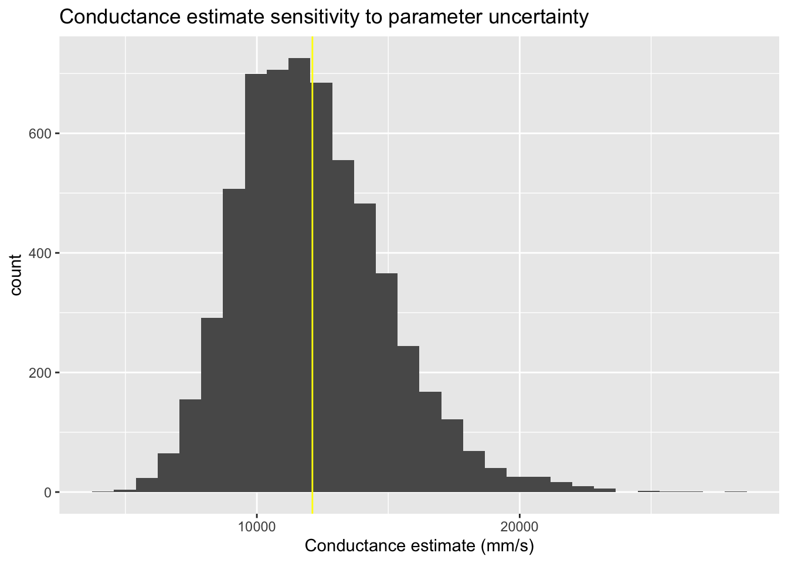
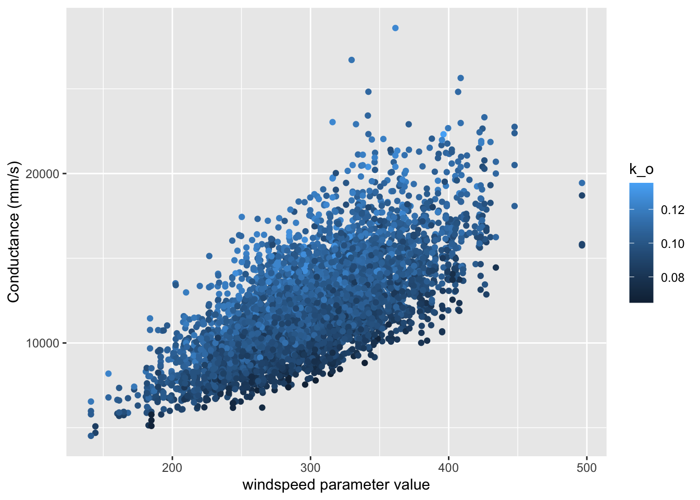

library(sensitivity)
library(tidyverse)
library(gridExtra)
library(purrr)
library(ggpubr)HW4 - Sobol
Part 1: Paper
The Houle et al. (2017) paper on snow model parameter sensitivity used Sobol sensitivity analysis to compare two types of snow models: one conceptual (SNOW-17) and one physically based (VIC) model. The parameter uncertainty has important implications for snow modelers who are developing these models, and for scientists interpreting these model results in the context of climate change. Specifically, the authors found that two parameters in the VIC model that have been historically fixed (the accumulation period albedo decay parameter, expA2, and the thaw period albedo parameter, expA1) are actually the two most sensitive model parameters and greatly effect the output snow water equivalent estimates from the model! This points to the importance of getting the best estimate possible for your specific system for the accumulation period albedo decay and thaw period albedo when implementing your models. Moreover, this analysis may even inspire future work to not fix these parameters, but to investigate making them vary with relevant other inputs. This paper’s ana;ysis into parameter uncertainty within the model can meaningfully impact the output estimate of snow water equivalent, which has large implications in hydrology, ecology, and society. Houle et al. sheds important light on the importance of accurate accumulation period albedo decay and thaw period albedo parameters for accurate snow water equivalent estimates. Thus, it is important for snow scientists to invest in accurate and precise satelite imagery to inform their albedo parameter choice. Additionally, in an operational context, it is important to consider the application of these models into systems with vastly different albedo patterns, and this work points to the importance of ensuring the parameter input is as good as it can be, due to the model’s sensitivity to it.
Part 2: Atmospheric Conductance
libraries
a
Use the Sobel approach to generate parameter values for the 4 parameters
# first, we define the distribution of the parameters
np=1000
k_o = rnorm(mean=0.1,sd=0.1*0.1, n=np) # assume that they are normally distributed with standard deviation of 1%
k_d = rnorm(mean=0.7, sd=0.7*0.1, n=np) # assume that they are normally distributed with standard deviation of 1%
v = rnorm(mean=300, sd=50, n=np) # normally distributed with a mean of 300 cm/s with a standard deviation of 50 cm/s
height = runif(min=3.5, max=5.5, n=np) # For vegetation height assume that height is somewhere between 3.5 and 5.5 m
# now, we will make a combined dataframe for the parameter values
X1 = cbind.data.frame(k_o, k_d, v, height=height)
## next, we will do a repeat sampling, using the same distribution of the parameters!
np=1000
k_o = rnorm(mean=0.1,sd=0.1*0.1, n=np) # assume that they are normally distributed with standard deviation of 1%
k_d = rnorm(mean=0.7, sd=0.7*0.1, n=np) # assume that they are normally distributed with standard deviation of 1%
v = rnorm(mean=300, sd=50, n=np) # normally distributed with a mean of 300 cm/s with a standard deviation of 50 cm/s
height = runif(min=3.5, max=5.5, n=np) # For vegetation height assume that height is somewhere between 3.5 and 5.5 m
# now, we will make a combined dataframe for the parameter values
X2 = cbind.data.frame(k_o, k_d, v, height=height)b
Run the atmospheric conductance model for these parameters
# source the conductance model
source("Catm.R")
## run model over these parameter values ##
# using sobolSalt here to generate the Sobol object "sens_Catm_Sobol"
# note, we will run the model outside and say model=NULL here, Naomi says it usually works better this way
sens_Catm_Sobol = sobolSalt(model = NULL, X1, X2, nboot = 100)
# run model for Sobol generated parameter sets and compute indices
parms = as.data.frame(sens_Catm_Sobol$X) # make a df that pulls the values from the X in the sobol object
colnames(parms)= colnames(X1) # this object had no column names, so pulling from my X1 created in the prior step
# running the Catm function over the parms dataframe that I just created using pmap_dbl # in other words, run the model over these parameter values
# output is "res" for results
res = pmap_dbl(parms, Catm)
# using the tell function to "tell" the sensitivity object (sens_Catm_Sobol) about the results associated with each parameter set
sens_Catm_Sobol = sensitivity::tell(sens_Catm_Sobol,res, res.names="ga")
# woohoo, we ran it!
# Time to look at the main effect, called "S" for Sobol
# partitions variance (main effect without co-variance) - sums approximately to one
# useful to add names
row.names(sens_Catm_Sobol$S) = colnames(parms)
sens_Catm_Sobol$S original bias std. error min. c.i. max. c.i.
k_o 0.1280736 3.334611e-03 0.03506407 0.06432475 0.2101580
k_d 0.1627961 -3.569696e-05 0.03462146 0.10692827 0.2485333
v 0.5107852 3.752112e-03 0.02334350 0.46254864 0.5615751
height 0.1133533 1.761161e-03 0.03266828 0.05051327 0.1849740# interpretation:
# windspeed (v) has strongest main effect (0.5)
# meaning, uncertainty in kd has the biggest impact on the output
# all parms but height are "significant" (CI does not cross zero EXCEPT height)
# Now let's check out the total effect (T)- accounts for parameter interactions
row.names(sens_Catm_Sobol$T) = colnames(parms) # give it names
sens_Catm_Sobol$T original bias std. error min. c.i. max. c.i.
k_o 0.2017871 -0.0011673482 0.012165760 0.1756614 0.2277985
k_d 0.1945362 0.0001919743 0.011552079 0.1725937 0.2161249
v 0.5351524 0.0014280047 0.029641023 0.4704348 0.5859621
height 0.1263621 -0.0004350316 0.008262744 0.1102515 0.1433477# interpretation:
# windspeed (v) has strongest total effect (0.5)
# meaning, uncertainty in kd has the biggest impact on the output
# now, height is significant, as is everything else still
# similar pattern to the main effect, but height is now significantc
Plot conductance estimates in a way that accounts for parameter uncertainty
# make a dataframe with the parameter values and the output (gs)
both = cbind.data.frame(parms, gs=sens_Catm_Sobol$y)
# look at overall gs sensitvity to uncertainty
ggplot(both, aes(x=gs))+geom_histogram()+geom_vline(xintercept=mean(both$gs), col="yellow") + labs(x="Conductance estimate (mm/s)") + ggtitle("Conductance estimate sensitivity to parameter uncertainty")`stat_bin()` using `bins = 30`. Pick better value with `binwidth`.
d
Plot conductance estimates against windspeed use the parameter that is 2nd in terms of total effect on response
# look at response of conductance to windspeed (the most important parameter according to the main effect and total effect)
# commented out, homework specified it wanted the next iteration
# ggplot(both, aes(v,gs))+geom_point()+labs(y="Conductance (mm/s)", x="k_d parameter")
# now, add in color to show the second most sensitive parm, k_o
# note, k_o just BARELY beats k_d in both maiin effect and total effect
ggplot(both, aes(v,gs, col=k_o))+geom_point()+labs(y="Conductance (mm/s)", x="windspeed parameter value")
e
Estimate the Sobel Indices for your output
# Time to look at the main effect, called "S" for Sobol
# partitions variance (main effect without co-variance) - sums approximately to one
sens_Catm_Sobol$S original bias std. error min. c.i. max. c.i.
k_o 0.1280736 3.334611e-03 0.03506407 0.06432475 0.2101580
k_d 0.1627961 -3.569696e-05 0.03462146 0.10692827 0.2485333
v 0.5107852 3.752112e-03 0.02334350 0.46254864 0.5615751
height 0.1133533 1.761161e-03 0.03266828 0.05051327 0.1849740# Now let's check out the total effect (T)- accounts for parameter interactions
sens_Catm_Sobol$T original bias std. error min. c.i. max. c.i.
k_o 0.2017871 -0.0011673482 0.012165760 0.1756614 0.2277985
k_d 0.1945362 0.0001919743 0.011552079 0.1725937 0.2161249
v 0.5351524 0.0014280047 0.029641023 0.4704348 0.5859621
height 0.1263621 -0.0004350316 0.008262744 0.1102515 0.1433477f
Comment on what this tells you about how atmospheric conductance and its sensitivity to variation in windspped differs in this setting as compared to the setting that we examined in class where windspeed was lower and less variable and vegetation was taller.
In our first analysis, in a system with higher and less variable windspeed and teller vegetation, we found that the the atmospheric conductance was actually MOST sensitive to the parameter k_d, the scalar for zero plane displacement (S (the main effect) for k_d = 0.53). The second most sensitive was windspeed, v (S for v = 0.21).
Interestingly, when we did this analysis in a system with shorter vegatation and lower but more variable windspeed, we found that the atmospheric conductance was most sensitive to windspeed, thus, in our system with lower vegetation and more variable windspeed, the windspeed parameter is more important in terms of model sensitivity. We found that the the atmospheric conductance was most sensitive to the parameter for windspeed, (S = 0.47, as opposed to the other system, where S= 0.21).
This analysis has strong implications for the use of the model in systems with different vegetation height and windspeed and variability, and how much to invest in accurate windspeed measurements. In a system with low vegetation and variable windspeed, the output is more sensitive to the windspeed. If I were to implement this model in this type of system, I would invest time and money into ensuring that my input values for the windspeed are as accurate as they can be, potentially by investing into better environmental loggers.